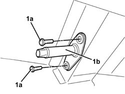

3380A40 LINKAGE SUPPORTS AND IDLERS - R+R
- Path
- Procedures > 33 BRAKES > 3380 HANDBRAKE > 3380A HANDBRAKE CONTROL AND LINKAGE > 3380A40 LINKAGE SUPPORTS AND IDLERS - R+R
- Kind
- repair procedure (removal / refitting; the operation number is the code)
- Applies to
- all engines; all production periods
- Interactive page
- https://sloeber94.github.io/elrnDB-fUlss/en/#/179007344
Applies to: all engines; all production periods
 Removing
Removing
 Refitting
RefittingOp. 3380A44 HANDBRAKE/LINKAGE PROTECTION - R+R
Op. 3380A38 LINK/CABLE CONNECTING HANDBRAKE LEVER TO CABLE - R+R
1. Undo retaining bolts (1a) and remove the mount (1b).

Applies to: all engines; all production periods
Refitting
Removing- Fit the mount and tighten the retaining bolts.
Op. 3380A38 LINK/CABLE CONNECTING HANDBRAKE LEVER TO CABLE - R+R